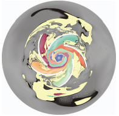
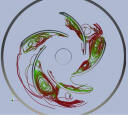
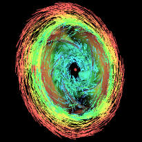
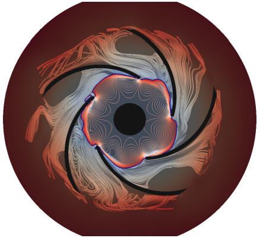
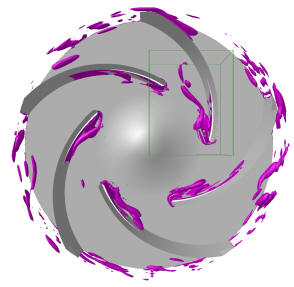
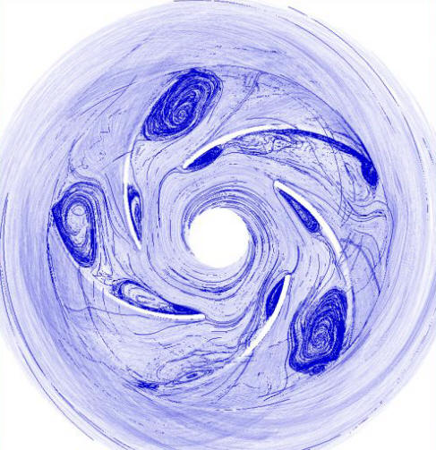

IEEE Visualization Contest 2011
Official event of the VisWeek 2011
Contributions
There were 6 high-quality submissions to this contest. For each paper, at least 5 reviews have been made by visualization experts and domain experts. For the best papers, two additional reviews have been done by further domain experts (see committee for details).
The winning submission and the honorable-mention
submission will be announced at
IEEE VisWeek 2011:
October, 25th, 2011, 11:40am,
Ballroom A,
Rhode Island Convention Center,
Providence, USA
|
 pdf, video |
Winner | Visualizing Unsteady Vortical Behavior of a
Centrifugal Pump Mathias Otto, Alexander Kuhn, Wito Engelke, Holger Theisel |
|
 pdf, video |
Honorable mention | Visualization of Vortex Core Differences between
Ensemble Simulations Alexis Yee Lyn Chan, Joohwi Lee, Russell M. Taylor II |
Further submissions in alphabetical order of submission title:
|
 pdf, video |
Interactive Fluid Dynamics Visualization Victor Mateevitsi, Andrew Johnson |
|
 pdf, video |
Team "CUTe Flow": Information-guided Streamtube
Seeding for the Visualization of Vortex Behavior in a
Centrifugal Pump at Deep Part Load Thomas Kanzok, Paul Rosenthal |
|
 |
Vortex Catchment Filip Sadlo, Grzegorz Karch, Marcel Hlawatsch, Daniel Weiskopf, Thomas Ertl |
|
 pdf, video |
Vortices Identification Based on Projection of
Streamlines Thiago S. Reis Santos, Christian Jorge Daniel Wong Cruz, Maria Cristina Ferreira de Oliveira, Rosane Minghim, Luis Gustavo Nonato, Danilo Medeiros Eler |
Early Registration
Notification
September, 9th, 2011
Deadline
July, 31st, 2011,
23:59 PST
Contact
|
|
|
|
|
|
Web and data hosting is provided by courtesy of SDSC, TeraGrid
and Clausthal University. (c) 2010/2011 - IEEE Vis Contest 2011, Jan Klein, Gabriel Zachmann Last update September, 12th, 2011 |
|
||